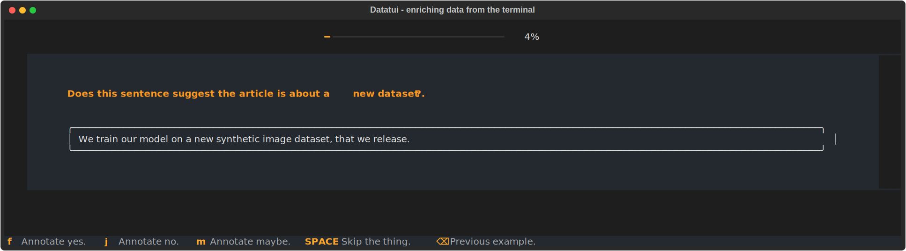
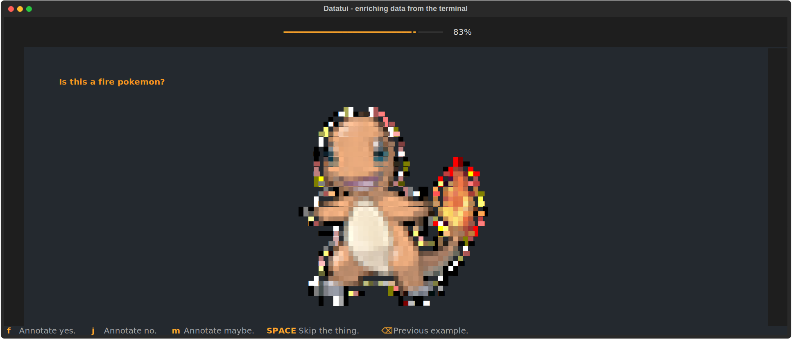

datatui
A minimal, and fun, annotation tool for the terminal.

Installation
Scope
The goal of this project is to offer a constrained and minimalistic alternative to full fledged web apps for data annotation. You can only use four labels: yes, no, maybe, and skip. Only having a few options forces you to keep the scope small, which usually does wonders for data quality. It is still pretty flexible though, so you can use it for more complex tasks if you want. Anything that you can render nicely in rich can be rendered in datatui.
You only need a terminal, which also means that you can SSH into your cron server to have a look at some of your data.
Examples
Custom rich rendering
Rich comes with a lot of features that allow you to easily customise the look of what you are annotating. You can learn more about constructing interfaces with rich on calmcode.io but we also provide a demo below that highlights how to add panels.

Here's the code that produces the above output.
from rich.panel import Panel
import json
from datatui import datatui, new_batch
# Read JSONL file
def generator():
with open("examples/arxiv.jsonl", "r") as f:
for line in f:
yield json.loads(line)
# Create a new batch, removes duplicates
batch = new_batch(generator(), cache_name="annotations", collection_name="default", limit=100)
if __name__ == "__main__":
# Run a new annotation session. Notice how we customise the content_render
# function to use rich Panels and that we add a description/progress bar to
# the annotation task.
app = datatui(list(generator()),
cache_name="annotations",
collection_name="default",
pbar=True,
description="Does this sentence suggest the article is about a [bold]new dataset[/bold]?.",
content_render=lambda x: Panel(x["text"])
)
app.run()
By leveraging the concent_render function you can customise the look of your annotations as you see fit.
Custom rich rendering, includes images!
Thanks to a healthy ecosystem of rich, we can easily include images in our annotations via
the rich-pixels plugin. Here is what that might look like.

To get this interface in datatui you would need to have a script like below.
from PIL import Image
from rich.align import Align
from rich_pixels import Pixels
from datatui import datatui
from pathlib import Path
stream = [{"path": str(p)} for p in Path("examples/pokemons").glob("*.png")]
def render_image(ex):
with Image.open(ex["path"]) as image:
resized_image = image.resize((40, 40), Image.LANCZOS)
return Align.center(Pixels.from_image(resized_image), vertical="middle")
if __name__ == "__main__":
app = datatui(stream,
cache_name="annotations",
collection_name="pokemon",
pbar=True,
description="Is this a fire pokemon?",
content_render=render_image)
app.run()
Note that this script can also be found in the examples folder of the repository.
How it works
Before an example is annotated it needs to be rendered. This is done by the content_render function.
This function assumes that the input is a dictionary and that the output is some sort of object that rich can render.
Given a renderable example, we do some extra work to prevent duplicates and to keep track of which examples have been annotated. This is done using a combination of a hashing function and diskcache. If the hash of an example is not in the cache, the example is rendered and shown to the user. If the hash is in the cache, we simply skip it. After the annotation, the example is saved to the cache as JSON, together with the label that the user chose.
There are two details worth mentioning here on top of this.
- You can pass a
cache_nameto thedatatuifunction. This allows you to configure the folder where we store the SQLite DB with all the annotations. - You can also pass a
collection_nameto thedatatuifunction. This name is added to each annotated example, and can be used to keep different annotation tasks separate. For example, you might want to have separate collections for each label, while still storing everything in the same SQLite instance. Adding a collection name will influence the hashing, and you can also use it to export a specific subset later.
Command line interface
You can also use datatui from the terminal. While it is preferable to define
a datatui session in a Python script, the CLI can also be used to start a simple
sessions.
In particular, the cli an be useful to write the annotations
to disk using the export command.